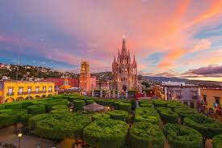

Lugar magico donde tus momentos tambien se vuelven magicos

San Miguel de Allende es una ciudad del estado mexicano de Guanajuato. Es parte de la macrorregión del Bajío.67 Es cabecera del municipio homónimo y uno de los principales destinos turísticos de México. Se encuentra a una altitud de 1910 m y está situada a 274 kilómetros de la Ciudad de México, a 97 km de la ciudad de Guanajuato, a 157 km de León, y a 70 km de Santiago de Querétaro.
San Miguel de Allende es espectacular al momento que pisas san miguel sientes tranquilidad. por todos nuestras areas verdes que tenemos bastantes, nuestro clima que es hermoso, pasa a disfrutar de este pueblo magico, no te arrepentiras, disfruta la arquitectura que tiene, sus resturantes, los lugares que tiene.
Autor: Palma Aboytes Brayan 4BP